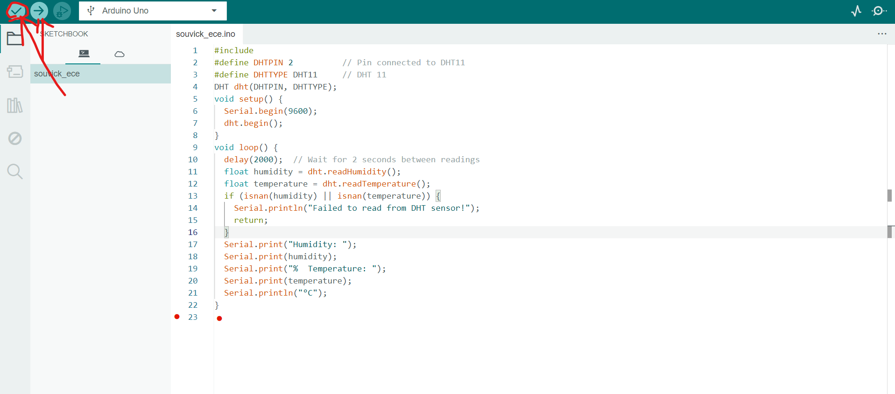

Building a Temperature and Humidity Monitor with DHT11 and Arduino
Introduction
This tutorial will walk you through the steps to build a simple temperature and humidity monitoring system using the DHT11 sensor and an Arduino. This project is ideal for beginners in electronics and programming. You'll learn how to wire the DHT11 sensor to the Arduino, write the code, and display the data on a serial monitor.
Step 1: Gather Your Materials
Before starting, make sure you have the following components:
- DHT11 Sensor
- Arduino Uno
- Jumper wires
- Breadboard

Step 2: Connect the DHT11 to Arduino
To connect the DHT11 sensor to the Arduino, follow the wiring diagram below:

Step 3: Write the Arduino Code
Now, let's write the code for the Arduino to read data from the DHT11 sensor. The following code will initialize the sensor and read the temperature and humidity values.
#include#define DHTPIN 2 // Pin connected to DHT11 #define DHTTYPE DHT11 // DHT 11 DHT dht(DHTPIN, DHTTYPE); void setup() { Serial.begin(9600); dht.begin(); } void loop() { delay(2000); // Wait for 2 seconds between readings float humidity = dht.readHumidity(); float temperature = dht.readTemperature(); if (isnan(humidity) || isnan(temperature)) { Serial.println("Failed to read from DHT sensor!"); return; } Serial.print("Humidity: "); Serial.print(humidity); Serial.print("% Temperature: "); Serial.print(temperature); Serial.println("°C"); }
Step 4: Upload and Test
Upload the code to your Arduino board and open the Serial Monitor to view the real-time temperature and humidity data. If everything is set up correctly, you should see the readings displayed in the Serial Monitor.
Step 5: Troubleshooting
If you're encountering issues, ensure the following:
- The DHT11 is correctly connected to the specified pin.
- The DHT library is installed in the Arduino IDE.
- Check the Serial Monitor baud rate (it should be 9600).
Watch the Video Tutorial
Watch the step-by-step video tutorial below to see the entire process in action.